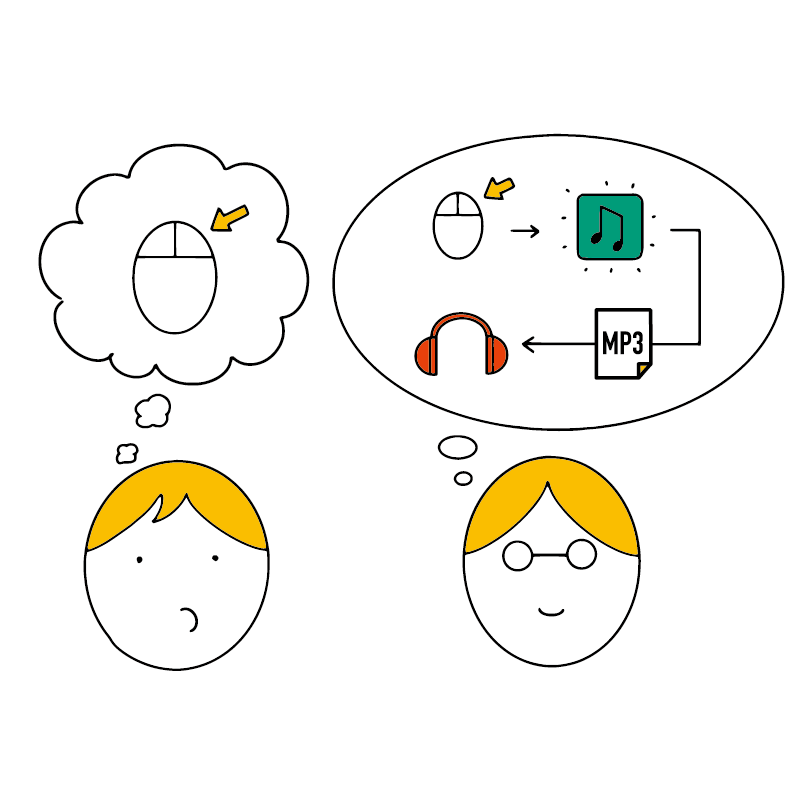

はじめに（この講座について）
この講座は、パソコン（PC）の使い方を基本から学び、Windows や Mac のパソコンを使いこなせるようになることを目指しています。
どんなアプリでも使う操作方法や考え方を覚えて、パソコンをマスターする第一歩を踏み出しましょう。
この講座はどんな人に向けて作られているの？
この講座は、次のような方々に向けて作られています。
- プログラミングなど、パソコンでやってみたいことがあるが、まだパソコンには自信がない方
- なんとなくパソコンは分かっているが、基本からやり直してもっと使いこなせるようになりたい方
- 進学や就職をきっかけにパソコンを使うことになったが、パソコンの操作に慣れていない方
また、Windows 用と Mac 用の説明がどちらもある ため、「いつもは Windows を使っていたけれど、Mac を初めて使うので使い方を学びたい」といった方にもおすすめです（もちろんその逆も大丈夫です）。
この講座の特徴
パソコンを学ぶときに必要なものが2つあります。それは 仕組みについての知識 と 操作方法 です。
ちょっとだけ、自動車の運転に例えてみましょう。
車はハンドルを回すと曲がれます。これが操作方法です。
ただ、車を運転するとき「ハンドルを回したら車が曲がる」ことだけを知っているよりは「ハンドルを回すことでタイヤの向きが変わるから、車が曲がる」と知っているほうがよいでしょう。この「どうしてその操作で動くのか」が 仕組みについての知識 です。

「なぜか良くわからないけど、ハンドルを回したら車が曲がる」という人と、「ハンドルを回すとタイヤの向きが変わるから曲がるんだ」という人では、どちらが安全な運転をできるでしょうか？理由を知っているほうではないでしょうか。
これはパソコンでも同じです。「ここをクリックしたら○○できる」という人より、「ここをクリックすると、パソコンが〜〜をするので○○できる」とわかっている人のほうが、トラブルにぶつかりにくくなります。また、新しいアプリや別のパソコンを使う時も、仕組みがわかっていればすぐに慣れられます。

また、先ほどのたとえ話ですが、自動車に詳しい人なら「ハンドルを回すことでステアリングシャフトが回転を……」とさらにくわしく説明できるかもしれません。しかし、自動車を日常生活でしか使わない人はここまで知らなくてもよいでしょう。
これもパソコンについても同じことが言えます。パソコンを学校の勉強や仕事で使うだけであれば、プログラマーが使うような細かい知識は覚えなくてよいです。
この講座では、初心者の方がパソコンをきちんと使いこなせるよう、ちょうどいいレベルの説明を心がけています。
つまり、初心者に必要な操作方法と知識を 最短ルートでバランス良く身につける ことができます！
この講座で学ぶと何ができるようになる？

この講座を終えると、Windows や Mac のパソコンを使いこなせるようになります。
どんなアプリでも使える基本がきっちり身につくので、いろいろなアプリを使いこなせるようになるでしょう。 学校の課題や、会社での仕事もスムーズにできるようになるはずです。また、学業や就職活動での選択肢も広がるでしょう。
また、プログラミングに興味がある人は、N 予備校のプログラミングコースに進むこともできるようになります。
この講座で必要な知識・経験
前もって必要なことは特にありません。全くパソコンを触ったことがなくても大丈夫です。数学や英語の知識も全く必要ありません。
ただし、ときどきスマホとパソコンを比べて説明することがあります。スマホを使ったことがある人は、より分かりやすく学べるでしょう。
また、この講座は実際にパソコンの使い方を説明しながら進む講座です。パソコンを持っているとよいですが、今は持っていなくとも読み進めることはできます。
付録編にはパソコンの選び方も書かれています。これからパソコンを買う人はぜひ参考にしてみてください。